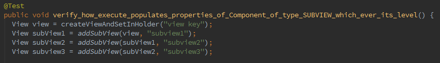
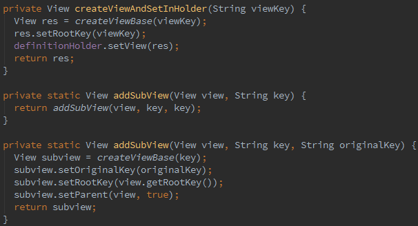
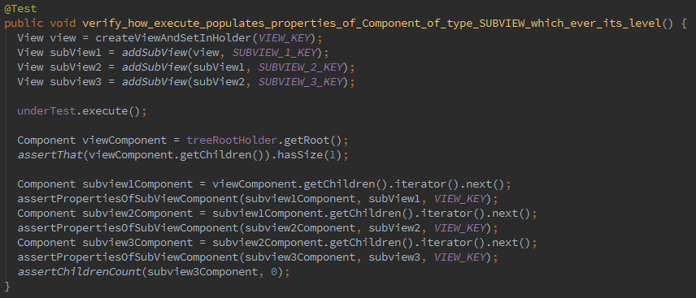
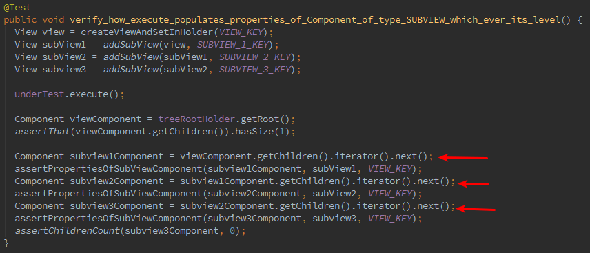
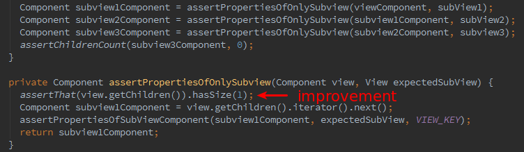
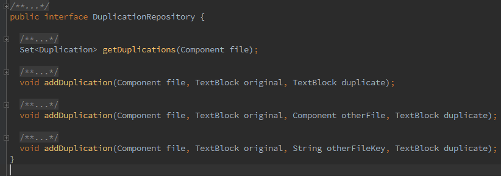
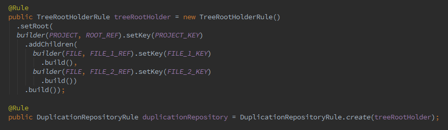
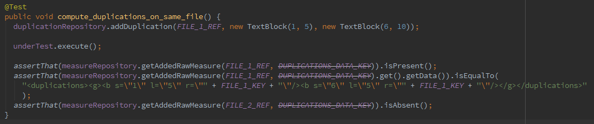

Unit tests
experience feedback from the Compute Engine team
part 1
Compute Engine
- 2,5 people
- 352 classes
- 2k+ unit tests
- 95% line coverage
- over several (sic!) months
and systematic thorough code review
Make code easy to read
because it makes it easier to
- understand
- provide critical feedback
- maintain
and therefor code review goes faster and is better
it does apply to Unit tests too!
Rule n°1
aka. mother of all goodness:
Kill duplication
Factory methods
- name helps understand what is created
- leave only discrimant arguments
- derive other parameters from it

- method naming tells exactly what is done
- arguments tells exactly what's important to this test
(key and parent)

Factory methods are small but changes everything regarding readability

- makes code shorter
- easier to maintain and improve

- but still some technical noise

- assertion methods can return stuff, use it!
- improving assertions is cheap
Some context in CE
- many Repositories and holders
- used to share data accross steps, injected in many places
- based on class Component
DuplicationRepository

Using the rule


- no Component object in test code
- only *_REF constants
Rules compared to production code
- provide test specific methods
- support DataProviders (thanks to reset methods)
Others rules
(in part 2)
- use constants
- leverage power of AssertJ custom assertions
- naming of test methods